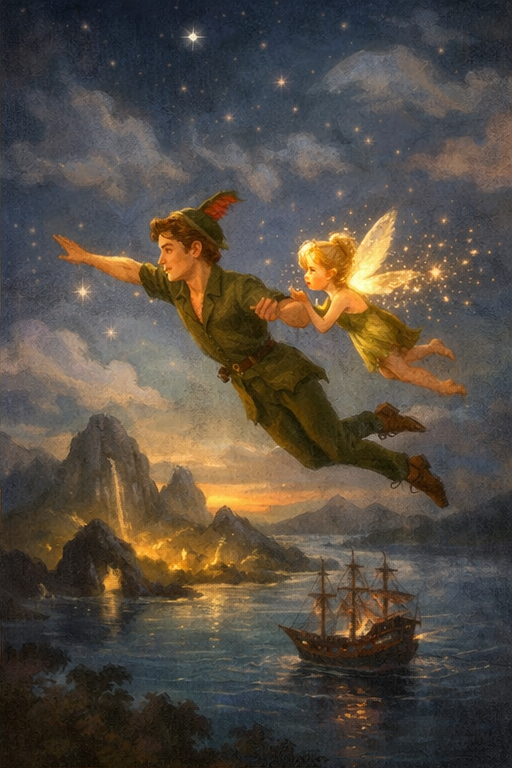
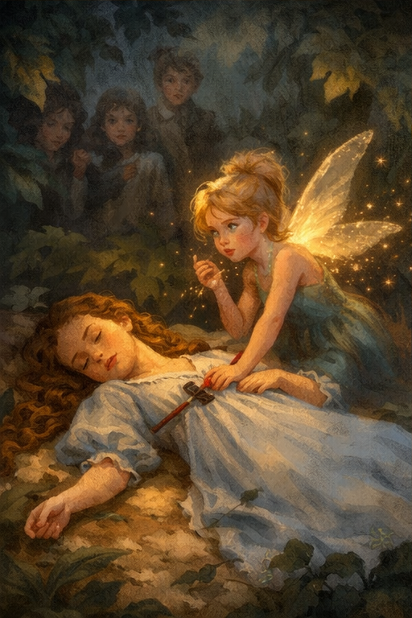
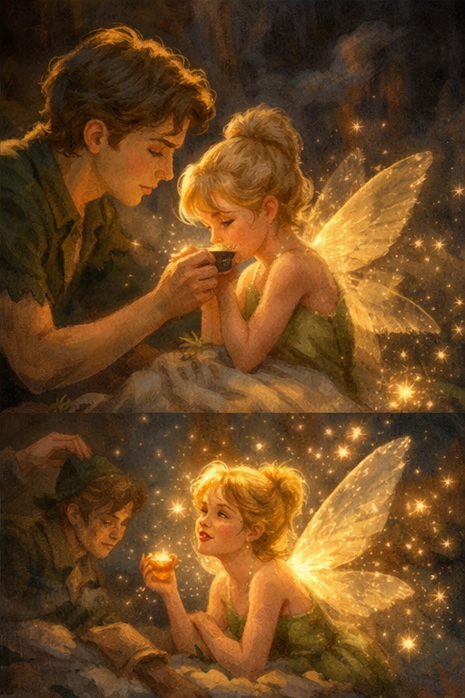

Το Νησί του Ποτέ δεν βρίσκεται σε χάρτη που ξεδιπλώνεις με τα χέρια, μα σε μονοπάτι που ανοίγει μόνο στη φαντασία: δεύτερο αστέρι δεξιά και κατευθείαν ώσπου να χαράξει. Εκεί τα δέντρα λικνίζονται σαν να ξέρουν παλιά τραγούδια, οι λιμνούλες κρατούν το φεγγάρι σαν ασημένιο νόμισμα, και οι νεράιδες γεννιούνται κάθε φορά που ένα βρέφος γελά για πρώτη φορά στον κόσμο. Ανάμεσά τους η Τίνκερμπελ ήταν μικρή σαν σπόρος πικραλίδας, μα λαμπερή σαν σταγόνα ήλιου μέσα σε νυχτερινό νερό. Φορούσε φόρεμα από πράσινο φύλλο, είχε φτερά καθαρά σαν διάφανο γυαλί, κι όταν μιλούσε ακουγόταν σαν ασημένιο κουδουνάκι. Εκείνη η γλώσσα των νεράιδων ήταν τόσο γρήγορη, που στους ανθρώπους έφτανε μονάχα ως ήχος, σαν μικρή μουσική που δεν χωρά σε λέξεις.
Η Τίνκερμπελ δεν ήταν νεράιδα της μεγάλης δύναμης, μα της λεπτής τέχνης. Έσφιγγε βίδες πιο μικρές από δάκρυ, ίσιωνε λυγισμένα κλειδάκια, έδενε ξανά σπασμένα πράγματα με σκόνη χρυσή, και γι’ αυτό είχε το όνομά της: μια νεράιδα που μαστορεύει και ξαναδένει ό,τι ράγισε. Όταν όμως πετούσε δίπλα στον Πήτερ Παν, γινόταν κάτι περισσότερο από τεχνίτρια. Του έδειχνε κρυφές ατραπούς στον ουρανό, ράντιζε με νεραιδόσκονη τον ώμο του για να πετά μακρύτερα, και άναβε δρόμους στο σκοτάδι, ώστε να βρίσκει πάντα την επιστροφή του στο υπόγειο σπιτικό των Χαμένων Παιδιών. Τον αγαπούσε με όλη τη φτερωτή, ακατάστατη καρδιά της. Επειδή όμως ήταν τόσο βαθιά, είχε και σκιά: ήθελε τον Πήτερ μόνο για εκείνη, όπως θέλει το μικρό λουλούδι ολόκληρη την πρωινή δροσιά.
Ο Πήτερ, παιδί ξέγνοιαστο και ασύλληπτο, δεν ανήκε σε κανέναν. Μπορούσε να γελά την ίδια στιγμή που ξεχνούσε μια λύπη, να πολεμά πειρατές πριν το μεσημέρι και να παίζει με τις σκιές του σούρουπου σαν να ήταν όλα ένα παιχνίδι. Η Τίνκερμπελ τον ακολουθούσε σαν χρυσή τελεία πίσω από τη γραμμή της πτήσης του, κι όταν εκείνος κουραζόταν, εκείνη έμενε άγρυπνη φρουρός στο κλαδί, έξω από το σπίτι κάτω από τη γη. Ήξερε να θυμώνει απότομα, όπως όλες οι νεράιδες που νιώθουν πολλά μέσα σε μια σταγόνα χρόνου, μα ήξερε και να μαλακώνει γρήγορα όταν ο Πήτερ της χαμογελούσε. Η ζωή της κυλούσε ανάμεσα σε σπίθες χαράς και στιγμές πικρές, ώσπου μια νύχτα έφτασε από το Λονδίνο μια κοπέλα που θα άλλαζε τα πάντα.

Κάποτε ο Πήτερ, που αγαπούσε να κλέβει ιστορίες από ανοιχτά παράθυρα, στάθηκε έξω από το σπίτι των παιδιών Ντάρλινγκ και άκουσε τη Γουέντυ να διηγείται ιστορίες για βασιλιάδες, θάλασσες και γενναία παιδιά. Του φάνηκε πως η φωνή της είχε τη ζεστασιά που έλειπε από το Νησί του Ποτέ, κι έτσι την κάλεσε να τον ακολουθήσει. Μαζί της ξεκίνησαν και τα δυο αδέλφια της, ο Τζον κι ο Μάικλ, κι η Τίνκερμπελ πέταξε μπροστά τους ρίχνοντας νεραιδόσκονη, για να μπορέσουν τα ανθρώπινα πόδια να ξεχάσουν το βάρος και να θυμηθούν τον ουρανό. Πέρασαν πάνω από καμπαναριά, πάνω από σύννεφα και θάλασσες, κι έφτασαν στο Νησί του Ποτέ, όπου τα Χαμένα Παιδιά έτρεξαν να τους προϋπαντήσουν με φωνές χαρούμενες. Όσο όμως ο Πήτερ χαμογελούσε στη Γουέντυ και της ζητούσε να γίνει μια γλυκιά «μητέρα» για το υπόγειο τους σπιτικό, τόσο η μικρή νεράιδα ένιωθε να μαζεύεται μέσα της ένα αγκάθι.
Η Γουέντυ ήταν πράα και τρυφερή, κι αυτό έκανε τη ζήλια της Τίνκερμπελ ακόμη πιο πικρή. Έβλεπε τα Χαμένα Παιδιά να κάθονται γύρω από τη νέα τους φίλη και να την ακούν με μάτια ορθάνοιχτα, έβλεπε τον Πήτερ να καμαρώνει, κι ένιωθε πως η δική της θέση στο πλάι του κινδύνευε. Έτσι, σε μια στιγμή τυφλής αστραπής, παραπλάνησε τα αγόρια και τους έδωσε να πιστέψουν πως το κορίτσι που κατέβαινε από τον ουρανό ήταν απειλή που έπρεπε να χτυπηθεί. Ένα βέλος τινάχτηκε βιαστικό, και η Γουέντυ έπεσε στα φύλλα. Μα στο στήθος της φορούσε ακόμη το μικρό βελανίδι που της είχε χαρίσει ο Πήτερ σαν παιδικό φυλαχτό, κι εκείνο δέχτηκε το χτύπημα αντί για την καρδιά της. Η χαρά του νησιού έγινε θρήνος, και η Τίνκερμπελ κατάλαβε τι είχε προκαλέσει. Δεν απολογήθηκε με λόγια, μόνο με δάκρυα που έμοιαζαν με σπινθήρες. Η Γουέντυ, όταν σηκώθηκε ξανά, της χάρισε συγχώρεση. Κι η μικρή νεράιδα έμαθε πως η αγάπη που θέλει να κρατά τον άλλον δεμένο γίνεται εύκολα πληγή.
Από εκείνη την ημέρα η Τίνκερμπελ προσπάθησε να φυλάξει τη Γουέντυ, σαν να ήθελε με κάθε πέταγμα να διορθώσει το λάθος της. Έμενε κοντά στην είσοδο του υπόγειου σπιτιού, άκουγε τις ιστορίες που έλεγε η Γουέντυ στα παιδιά και, παρόλο που κάποιες στιγμές πικραινόταν ακόμη, δεν άφηνε ξανά τη ζήλια να γίνει πράξη. Στο Νησί του Ποτέ οι μέρες έμοιαζαν ατέλειωτες: άλλοτε μάχες με πειρατές, άλλοτε παιχνίδια στα κλαδιά, άλλοτε βραδιές που η φωτιά τρεμόσβηνε και η Γουέντυ μιλούσε για σπίτια αληθινά, για μητρικά χέρια και για κρεβάτια που μοσχοβολούν καθαρά σεντόνια. Η Τίνκερμπελ άκουγε από ψηλά, καθισμένη σε μια κλωστή φωτός, και συλλογιζόταν πως ίσως η καρδιά ωριμάζει ακόμη και σε τόπο όπου κανείς δεν μεγαλώνει.

Ο χρόνος στο Νησί του Ποτέ μοιάζει να μην περνά, όμως οι κίνδυνοι ποτέ δεν κοιμούνται. Στις ακτές παραμόνευε ο σκοτεινός Καπετάνιος Χουκ, άντρας περήφανος και αδυσώπητος, που μισούσε τον Πήτερ Παν με μίσος παλιό σαν σκουριασμένη λάμα. Η σκιά του πλοίου του περνούσε τα βράδια πάνω από τη θάλασσα σαν κακός οιωνός, κι από μακριά ακουγόταν καμιά φορά το ρολόι μέσα στην κοιλιά του κροκόδειλου που τον καταδίωκε. Ο Χουκ γνώριζε πως δεν μπορούσε πάντοτε να νικήσει τον Πήτερ με ξίφος. Έψαχνε, λοιπόν, ύπουλο τρόπο να χτυπήσει εκεί που το παιδί του ανέμου ένιωθε ασφαλές: στο μικρό υπόγειο σπίτι, εκεί όπου η Γουέντυ φρόντιζε τα Χαμένα Παιδιά και η Τίνκερμπελ φρουρούσε τη νύχτα.
Η νύχτα της μεγάλης δοκιμασίας ήρθε ύστερα από βαριά σύγκρουση με τους πειρατές. Ο Πήτερ γύρισε κουρασμένος, μα ακόμη γελαστός, και ξάπλωσε για λίγο. Δίπλα του υπήρχε το φάρμακο που συνήθιζε να πίνει πριν κοιμηθεί. Ο Χουκ είχε περάσει κρυφά και είχε στάξει μέσα δηλητήριο, πικρό σαν προδοσία. Η Τίνκερμπελ είδε την παγίδα. Πέταξε γύρω από το πρόσωπο του Πήτερ σαν τρεμάμενη φλόγα, κουδούνισε όσο δυνατά μπορούσε, τον ικέτευσε στη γλώσσα της να μην αγγίξει το ποτήρι. Εκείνος, ανήξερος από τα λόγια της, την πέρασε για πείσμα της στιγμής και άπλωσε το χέρι του. Τότε η μικρή νεράιδα, χωρίς δεύτερη σκέψη, όρμησε μπροστά, πήρε εκείνη τη γουλιά του θανάτου και σωριάστηκε πάνω στο ξύλο του τραπεζιού.
Το φως της έσβησε τόσο που έμεινε μονάχα μια αχνή σπίθα στην παλάμη του Πήτερ. Εκείνος πάγωσε. Κρατώντας τη σαν εύθραυστο πέταλο, φώναξε στη νύχτα, στη θάλασσα, στα σπίτια του κόσμου πως οι νεράιδες ζουν όσο υπάρχουν καρδιές που πιστεύουν σ’ αυτές. Ζήτησε από όσους τον άκουγαν, μικρούς και μεγάλους, να πιστέψουν με όλη τους την καρδιά, να χειροκροτήσουν για να γυρίσει η ζωή στο μικρό του φως. Και σαν να ξύπνησε ο ίδιος ο αέρας, ανέβηκε από παντού ένα απαλό κύμα: από παιδικά δωμάτια, από στόματα που ψιθύρισαν «πιστεύω», από ψυχές ώριμες που δεν ξέχασαν πως κάποτε είδαν κι εκείνες ένα θαύμα. Η σπίθα μεγάλωσε, έγινε χρυσή σταγόνα, έπειτα μικρή φλόγα. Η Τίνκερμπελ άνοιξε τα μάτια της ξανά και πέταξε έναν κύκλο γύρω από τον Πήτερ, σαν ευχαριστία και υπόσχεση μαζί.
Από εκείνο το ξημέρωμα η Τίνκερμπελ έλαμπε διαφορετικά. Δεν είχε χάσει τη ζωηράδα της, ούτε το πείσμα της, μα είχε βρει μέσα της μια ησυχία πιο βαθιά. Ήξερε πια ότι η αφοσίωση δεν είναι λέξη, αλλά πράξη που δοκιμάζεται όταν η καρδιά φοβάται. Κι ο Πήτερ, όσο μπορούσε να θυμάται, κράτησε στο βλέμμα του ευγνωμοσύνη για το μικρό πλάσμα που τον έσωσε. Όταν τα Χαμένα Παιδιά τον ρωτούσαν γιατί κοιτά τη φίλη του σαν να κοιτά άστρο κοντινό, εκείνος γελούσε και απαντούσε πως η Τίνκερμπελ είναι το πιο γενναίο πλάσμα που χωρά στην παλάμη ενός παιδιού.

Ύστερα από αυτά, το Νησί του Ποτέ συνέχισε να τραγουδά τους γνώριμους σκοπούς του. Η Γουέντυ έραβε, φρόντιζε, αφηγούνταν ιστορίες στα Χαμένα Παιδιά, κι εκείνα αποκοιμιούνταν κάτω από τη γη με χαμόγελο. Μα όσο ο καιρός κυλούσε, η νοσταλγία του σπιτιού δυνάμωνε. Έτσι ήρθε και η ώρα της επιστροφής: η Γουέντυ, ο Τζον και ο Μάικλ πέταξαν πάλι προς το Λονδίνο, κι αρκετά Χαμένα Παιδιά τους ακολούθησαν για να γνωρίσουν μια αληθινή οικογένεια. Ο Πήτερ έμεινε πίσω, όπως ήταν το πεπρωμένο του, γιατί εκείνος ανήκε στο νησί, στον άνεμο και στις περιπέτειες. Στην άκρη του παραθύρου, πριν χαθεί η Γουέντυ στο φως της αυγής, η Τίνκερμπελ στάθηκε σιωπηλή. Η κοπέλα της χαμογέλασε με τρυφερότητα, και η νεράιδα ανταπέδωσε με ένα μικρό νεύμα, τόσο ελαφρύ που έμοιαζε με σπίθα που τρέμει.
Από τότε η Τίνκερμπελ έμεινε κοντά στον Πήτερ σαν άγρυπνος φρουρός. Κάποτε θύμωνε ακόμη, κάποτε έβγαζε πεισματάρικες λάμψεις, μα ποτέ δεν ξέχασε τι κοστίζει μια απερίσκεπτη σκιά στην καρδιά. Έγινε νεράιδα πιο αληθινή: μικρή, λαμπερή, εύθραυστη, ζηλιάρα καμιά φορά, μα αφοσιωμένη ως το τέλος. Κι αν βαθιά στη νύχτα, όταν όλα σωπαίνουν, ακούσεις ένα λεπτό κουδούνισμα στο τζάμι και δεις ένα χρυσό στίγμα να χορεύει στον αέρα, μην το αποδιώξεις. Μπορεί να είναι εκείνη που περνά για να θυμίσει πως η αγάπη δεν είναι να κρατάς τον άλλον δικό σου, αλλά να τον προστατεύεις, ακόμη κι όταν χρειαστεί να δώσεις το δικό σου φως.
Κι αυτό είναι το πιο γλυκό μάθημα που άφησε πίσω της η Τίνκερμπελ στον κόσμο του Πήτερ Παν: ότι η πίστη σώζει, η συγχώρεση γιατρεύει και η αφοσίωση, όσο μικρή κι αν φαίνεται, μπορεί να γίνει δυνατότερη από φόβο, ζήλια και σκοτάδι. Όποιος το θυμάται αυτό, κρατά μέσα του μια πόρτα ανοιχτή για το Νησί του Ποτέ.